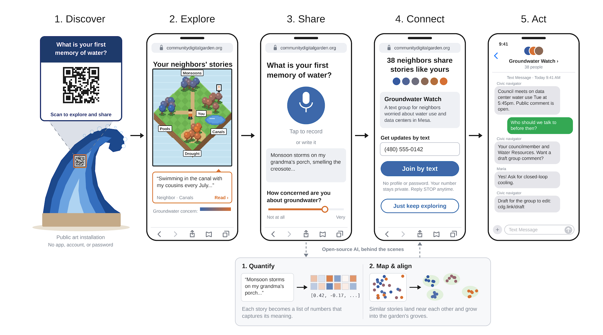

New Media
Who gets to shape the stories that guide our lives and communities? These projects bring my narrative agency framework into creative practice through arcade games, public writing, community art, and civic AI. They explore how people can question the media they encounter, contribute their own stories, and build places to gather and organize. Across online spaces and Arizona neighborhoods, the aim is to give people more opportunities to shape their shared world.

Digital Community Gardens
I am developing a civic platform grounded in my narrative agency framework. Public art and open-source AI help residents share stories, find common concerns, and organize to shape local technology decisions.
Vitality AZ
A community-led platform bringing Arizona residents, developers, artists, city leaders, and academics together through creative placemaking, local organizing, and collective storytelling.
Faithscape & New Sage
I connect research on religion, narrative agency, and neighborhood design with secular community building. Faithscape develops the research; New Sage shares findings and public commentary.
mediaslop
An independent media lab and arcade making browser games about attention and online life, alongside essays, criticism, fiction, and periodical slop digests.